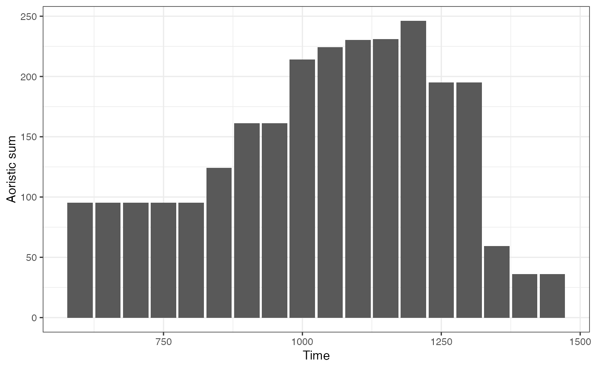
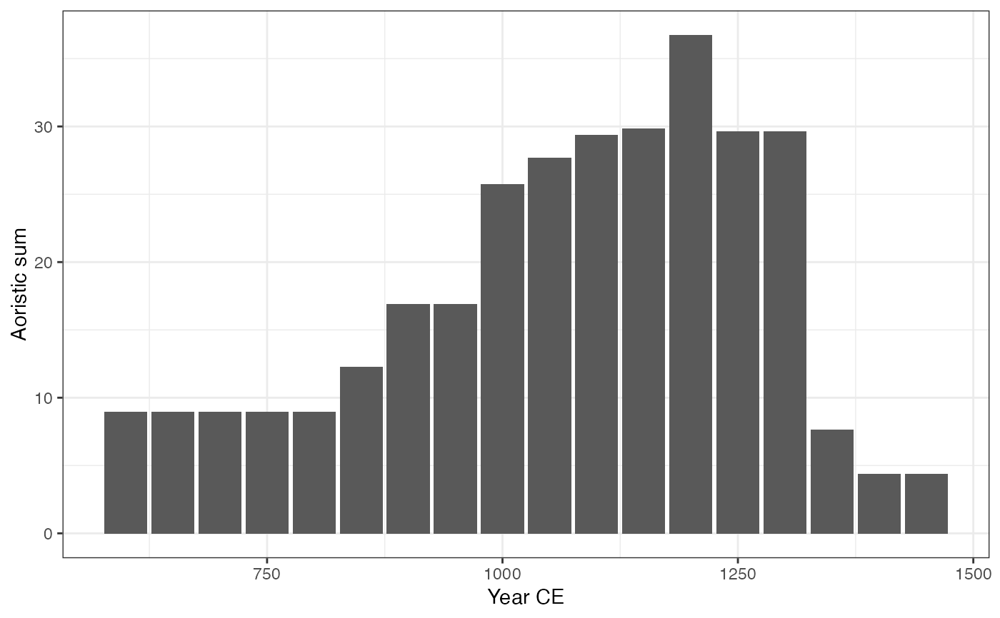
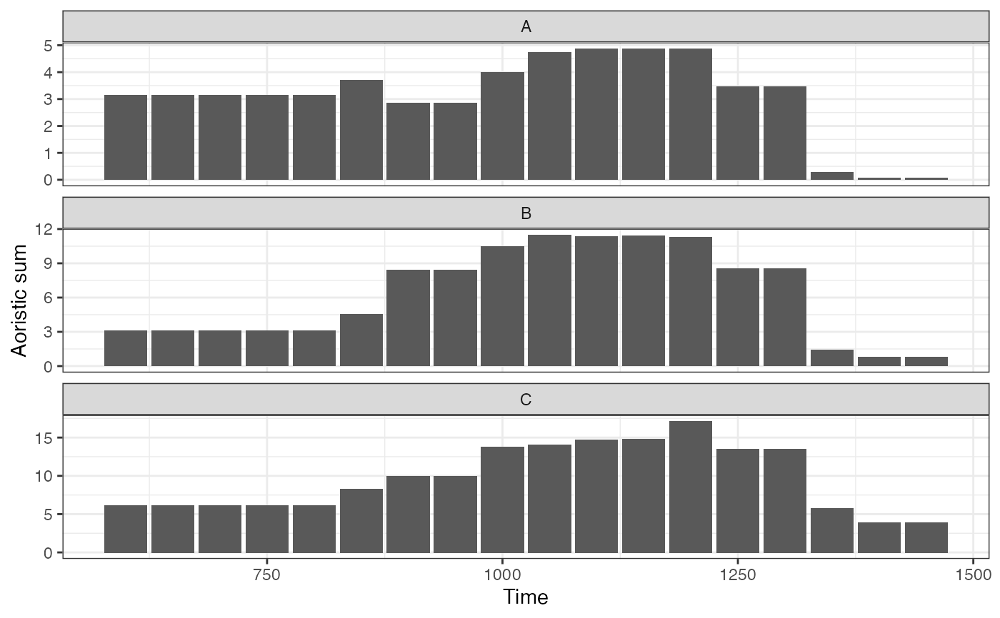
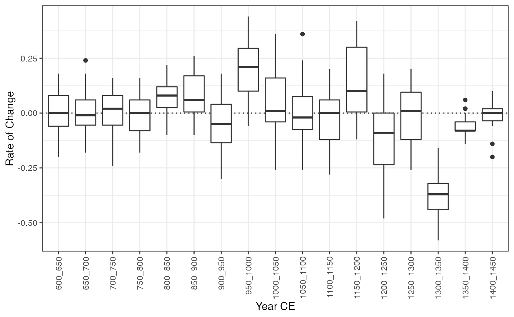
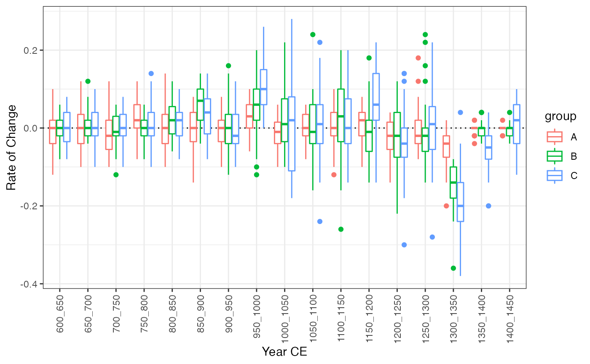

Computes the aoristic sum.
aoristic(x, y, ...)
# S4 method for numeric,numeric
aoristic(
x,
y,
step = 1,
start = min(x, na.rm = TRUE),
stop = max(y, na.rm = TRUE),
weight = TRUE,
groups = NULL
)
# S4 method for list,missing
aoristic(x, step = 1, start = NULL, stop = NULL, weight = FALSE, groups = NULL)Arguments
- x
A
numericvector. Ifyis missing, must be alist(or adata.frame) withnumericcomponents (columns)fromandto.- y
A
numericvector. If missing, an attempt is made to interpretxin a suitable way.- ...
Currently not used.
- step
A length-one
integervector giving the step size, i.e. the width of each time step in the time series (in years CE; defaults to \(1\)).- start
A length-one
numericvector giving the beginning of the time window (in years CE).- stop
A length-one
numericvector giving the end of the time window (in years CE).- weight
A
logicalscalar: . Defaults toFALSE(the aoristic sum is the number of elements within a time step).- groups
A
factorvector in the sense thatas.factor(groups)defines the grouping. Ifxis alist(or adata.frame),groupscan be a length-one vector giving the index of the grouping component (column) ofx.
Value
An AoristicSum object.
References
Crema, E. R. (2012). Modelling Temporal Uncertainty in Archaeological Analysis. Journal of Archaeological Method and Theory, 19(3): 440-61. doi: 10.1007/s10816-011-9122-3 .
Johnson, I. (2004). Aoristic Analysis: Seeds of a New Approach to Mapping Archaeological Distributions through Time. In Ausserer, K. F., Börner, W., Goriany, M. & Karlhuber-Vöckl, L. (ed.), Enter the Past - The E-Way into the Four Dimensions of Cultural Heritage, Oxford: Archaeopress, p. 448-52. BAR International Series 1227. doi: 10.15496/publikation-2085
Ratcliffe, J. H. (2000). Aoristic Analysis: The Spatial Interpretation of Unspecific Temporal Events. International Journal of Geographical Information Science, 14(7): 669-79. doi: 10.1080/136588100424963 .
Author
N. Frerebeau
Examples
## Aoristic Analysis
data("zuni", package = "folio")
## Set the start and end dates for each ceramic type
dates <- list(
LINO = c(600, 875), KIAT = c(850, 950), RED = c(900, 1050),
GALL = c(1025, 1125), ESC = c(1050, 1150), PUBW = c(1050, 1150),
RES = c(1000, 1200), TULA = c(1175, 1300), PINE = c(1275, 1350),
PUBR = c(1000, 1200), WING = c(1100, 1200), WIPO = c(1125, 1225),
SJ = c(1200, 1300), LSJ = c(1250, 1300), SPR = c(1250, 1300),
PINER = c(1275, 1325), HESH = c(1275, 1450), KWAK = c(1275, 1450)
)
## Keep only assemblages that have a sample size of at least 10
keep <- apply(X = zuni, MARGIN = 1, FUN = function(x) sum(x) >= 10)
## Calculate date ranges for each assemblage
span <- apply(
X = zuni[keep, ],
FUN = function(x, dates) {
z <- range(unlist(dates[x > 0]))
names(z) <- c("from", "to")
z
},
MARGIN = 1,
dates = dates
)
## Coerce to data.frame
span <- as.data.frame(t(span))
## Calculate aoristic sum (normal)
aorist_raw <- aoristic(span, step = 50, weight = FALSE)
plot(aorist_raw)

## Calculate aoristic sum (weights)
aorist_weigth <- aoristic(span, step = 50, weight = TRUE)
plot(aorist_weigth)

## Calculate aoristic sum (weights) by group
groups <- rep(c("A", "B", "C"), times = c(50, 90, 139))
aorist_groups <- aoristic(span, step = 50, weight = TRUE, groups = groups)
plot(aorist_groups)

## Rate of change
roc_weigth <- roc(aorist_weigth, n = 30)
plot(roc_weigth)

## Rate of change by group
roc_groups <- roc(aorist_groups, n = 30)
plot(roc_groups, facet = FALSE)
